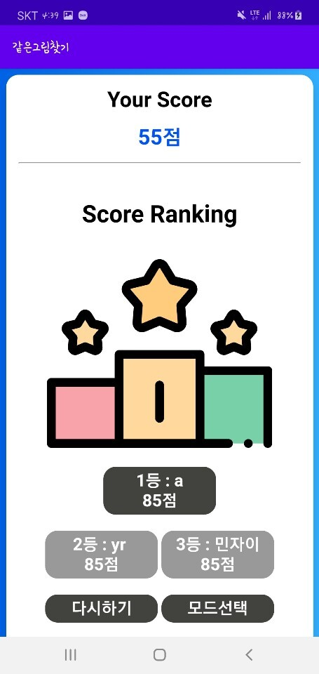
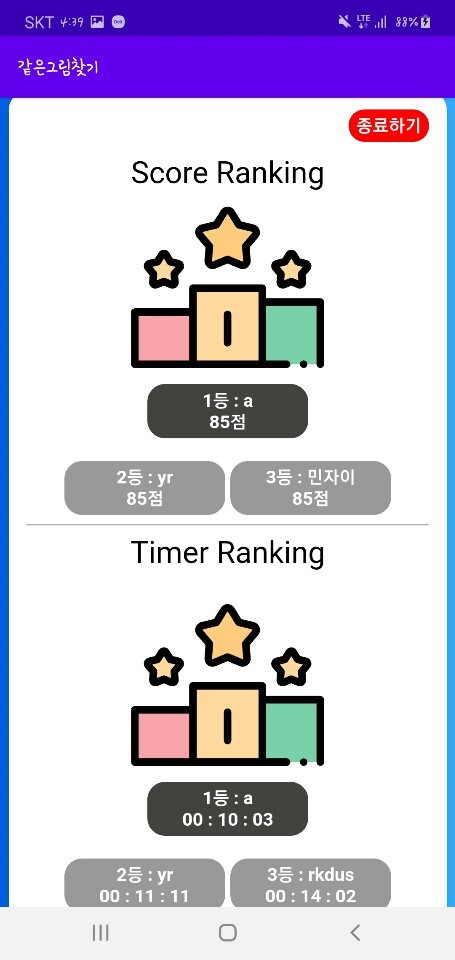

같은 그림 찾기
- 회원이 아니시라면 먼저 회원가입을 하셔야합니다.
- 회원이시라면, 로그인을 하셔야 게임을 즐기실 수 있습니다.
- 총 20개의 카드로 10개 종류의 그림이 있습니다.
그림 짝을 모두 맞추면 끝나는 단순한 게임입니다.
- 게임 모드는 Score mode와 Timer mode 2가지로 나뉩니다.
하단에는 회원님의 아이디, 점수(Score mode의 경우) 또는 시간(Timer mode의 경우), start버튼이 있습니다.
하단의 start 버튼을 누르면 게임이 시작됩니다.
상단 우측의 빨간색 X 버튼을 누르면 게임 도중에 끝낼 수 있습니다.
- Score mode : 시간에 제한은 없습니다. 하지만 짝을 잘못 맞췄을 시에는 감점이 있습니다.
맞췄을 시 : +10 / 틀렸을 시 : -5

- Timer mode : 누가 더 빨리 게임을 끝내는지 겨루는 방식입니다.
타이머가 존재합니다. 하지만 카드 짝을 잘못 맞췄을 경우에 감점은 없습니다.

- Rank : Timer mode와 Score mode의 rank를 확인할 수 있습니다. 각 모드별로 1위부터 3위까지 보여줍니다.
